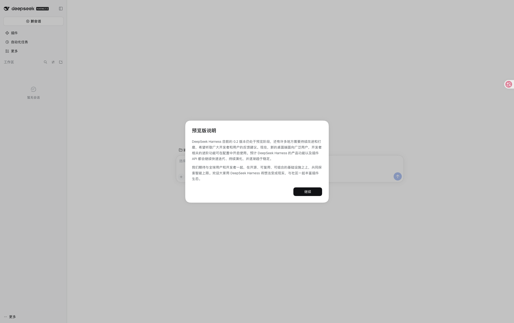
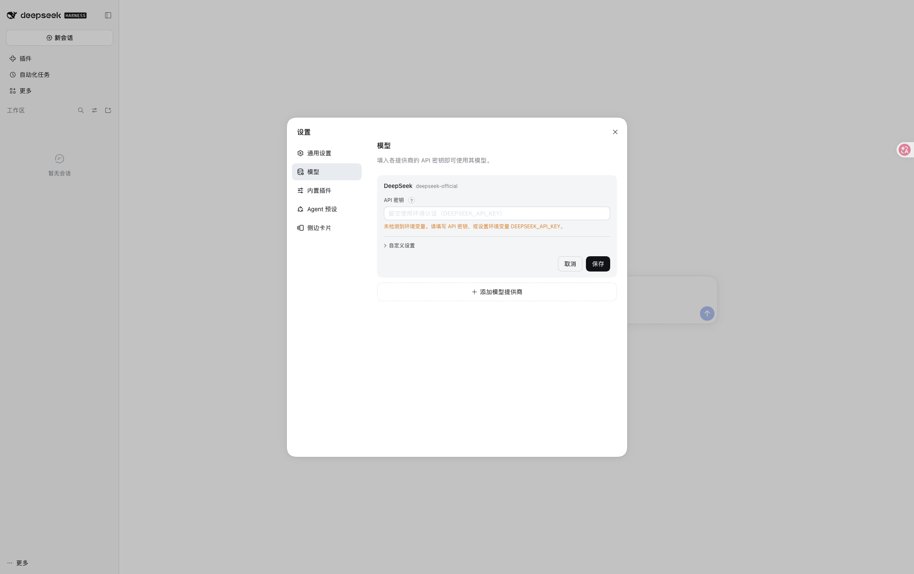
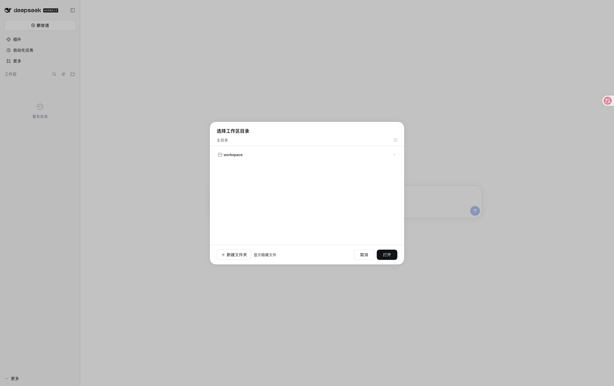
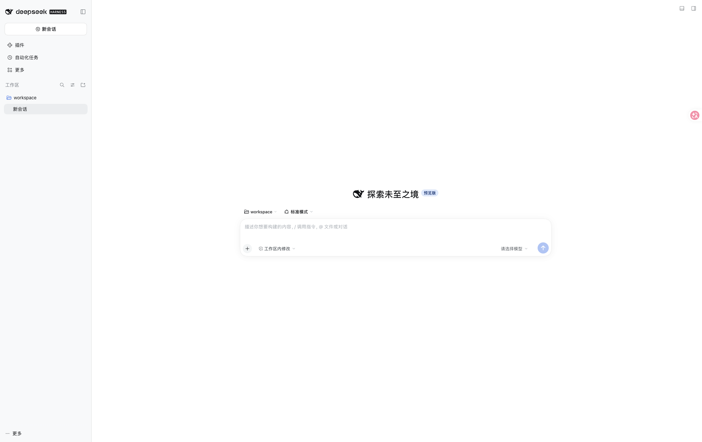

DeepSeek-Harness Community Edition ComputeNest Deployment Guide
Service Overview
DeepSeek-Harness Community Edition is an Agent Harness open-sourced by DeepSeek AI. It provides a browser-based Web UI where users can configure DeepSeek or OpenAI-compatible models, select a workspace, and run code agent tasks.
The current version is DeepSeek Harness 0.2.1-rc.5. Compared with the previous 0.1.0-rc.6 version, the main feature and usability changes are:
| Feature | Updates |
|---|---|
| Model configuration | Custom model APIs support per-model reasoning levels in the UI. Input types, context windows, and maximum output tokens are configurable; actual capabilities depend on the model. |
| Automation | Automation tasks are built into the Web UI. Reminder tools are available in Standard, Creator, and PTC modes, but not in Minimal mode or subagents. |
| Plugin management | Discover and install plugins from custom plugin index sources. The new "Let Agent create a plugin" entry starts work after you send a request. |
| Long conversations and drafts | Use /compact to compress context manually. Restoring drafts or switching workspaces preserves file, folder, and session references. |
| Message display | Keys and tokens in sent messages are masked by default and can be revealed on demand. Version 0.2.1-rc.5 improves the display of thinking content. |
| Experimental extensions | Git Worktrees, reasoning translation, and Developer Tools plugins are available for on-demand installation or enablement on the Plugins page; they are not necessarily enabled by default. |
The Git Worktrees plugin lets the agent create and enter an independent Git checkout. Reasoning translation supports Bing, Google, or paid DeepSeek Flash. Developer Tools provides raw session logs and debugging tools. Experimental features may change between versions; read the corresponding plugin documentation before use.
See the 0.2.1-rc.1 cumulative release notes and 0.2.1-rc.5 release notes for details.
Service Instance Deployment Workflow
Deployment Steps
- Open the ComputeNest service instance creation page. Select a region and fill in the instance type, instance password, and network parameters.
-
After confirming the pricing details, click Next: Confirm Order. Accept the service agreement and click Create Now.
-
Wait for the service instance deployment to complete. Once finished, check the
WebUIAddressvalue in the Outputs section of the service instance details page. -
Click the Secure Proxy URL in the outputs to open the Web UI. The page should display the DeepSeek Harness new session, settings, and workspace selection entry points.

Initial Configuration
After opening the DeepSeek Harness Web UI, you cannot start a session immediately. You must first configure the model and workspace.
1. Configure the LLM Model
The first visit shows a Getting started guide; click Add API Key to go straight to model configuration, or open More → Settings → Models from the lower-left corner.

- On the Models tab, the page lists the DeepSeek provider (
deepseek-official) and an Add model provider entry. - Pick one of the following to set up model access:
- Enter a DeepSeek API Key to use the official DeepSeek model.
- Click Add model provider → Third-party model provider and choose from the built-in catalog (OpenAI, Anthropic, Kimi, Qwen, and others), then enter the API Key.
- Click Add model provider → Custom model API and fill in the Base URL, API Key, and model ID.
- Click Create for a new provider or Save when editing an existing provider.
Without a configured model API Key, the Web UI can still be opened, but model requests will not work.
Example: Connect Alibaba Cloud Bailian qwen-plus
- Open Settings → Models → Add model provider → Custom model API.
-
Enter the following settings. Use an API key obtained from the Bailian console; do not put the key in conversations or public files.
Field Value Provider ID bailianDisplay name 阿里云百炼API address https://dashscope.aliyuncs.com/compatible-mode/v1API protocol OpenAI Chat CompletionsAPI key Your own Bailian API key Model ID qwen-plusModel display name Qwen Plus -
Add the model and click Create. When editing an existing provider, click Save.
- After selecting a workspace, choose Qwen Plus in the conversation's model selector.
This example uses the Bailian compatible endpoint in the Chinese mainland; use an API key for that region. For other regions or gateways, follow the provider's documented API address and protocol. Saving settings or detecting credentials does not prove that model calls work; verify with an actual conversation.
2. Select a Workspace
- Return to the main page and click Select workspace.
- In the directory picker, enter workspace and click Open.

- Once a workspace is selected, the new session input box becomes functional.

The service instance prepares /opt/deepseek-harness/workspace on the ECS as the default working directory and exposes it with the same name under the home directory so the directory picker can select it directly. DeepSeek Harness session data, credentials, storage, and attachments are stored under /opt/deepseek-harness/dsh-home.
3. Start a Conversation
- Confirm that a workspace is selected and choose a configured model in the model selector.
- Send a task, such as:
Summarize the directory structure of the current workspace. Do not modify any files. - Wait for an actual model response to confirm successful authentication and invocation. If the request fails, check the API key, API address, protocol, model ID, and the instance's outbound connectivity.
Use /compact in the composer when you need to compress a long conversation's context.
Operations & Maintenance
To troubleshoot the service on the ECS, connect to the instance using the instance password and run:
sudo systemctl status deepseek-harness.service
sudo systemctl status nginx.service
sudo journalctl -u deepseek-harness.service -n 100 --no-pager
The service startup script is located at /opt/deepseek-harness/bin/start-dsh-web, and application logs are at /opt/deepseek-harness/logs/service.log.
Important Notes
- DeepSeek Harness is currently in developer preview. Future upstream versions may introduce breaking changes.
- Model API Keys configured in the Web UI are stored in the service instance's local persistent directory. Please manage instance access permissions carefully.